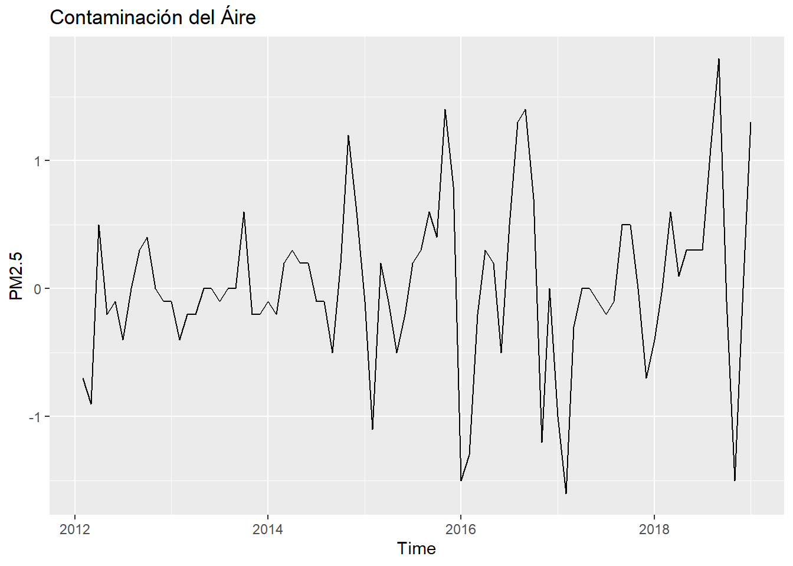
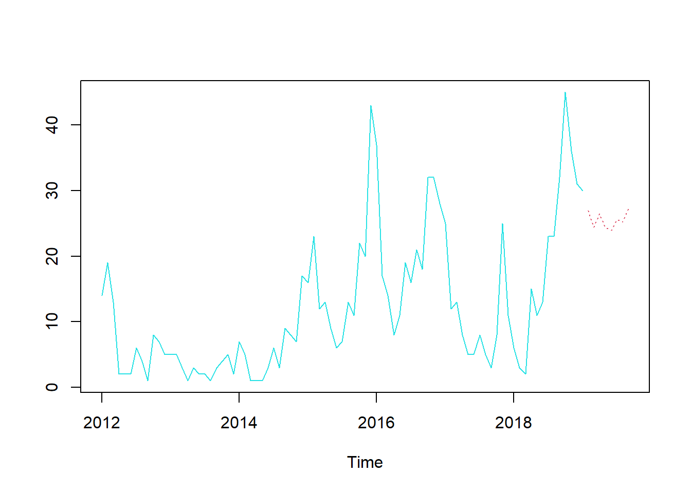

Chapter 7 Documento Bookdown - Propuesta avance 7
Aplicar las redes neuronales ELMAN y Jordan, y su pronóstico al conjunto de datos con el que han venido trabajando.
## ── Attaching core tidyverse packages ──────────────────────── tidyverse 2.0.0 ──
## ✔ dplyr 1.1.4 ✔ readr 2.1.5
## ✔ forcats 1.0.0 ✔ stringr 1.5.1
## ✔ ggplot2 3.5.1 ✔ tibble 3.2.1
## ✔ lubridate 1.9.3 ✔ tidyr 1.3.1
## ✔ purrr 1.0.2
## ── Conflicts ────────────────────────────────────────── tidyverse_conflicts() ──
## ✖ dplyr::filter() masks stats::filter()
## ✖ dplyr::lag() masks stats::lag()
## ℹ Use the conflicted package (<http://conflicted.r-lib.org/>) to force all conflicts to become errors## Registered S3 method overwritten by 'quantmod':
## method from
## as.zoo.data.frame zoolibrary(readxl)
datos_CentroAltoRendimiento_RMCAB <- read_excel("C:/Users/ALVARO ARIZA/Desktop/Maestria Javeriana/SERIES DE TIEMPO/ACTIVIDAD 7/datos_CentroAltoRendimiento_RMCAB.xlsx",
col_types = c("date", "numeric", "numeric"))
View(datos_CentroAltoRendimiento_RMCAB)datos_CentroAltoRendimiento_RMCAB %>%
mutate_at(vars(DateTime), list(year=year, month=month, day=day))%>%
select("month", "year", "CO")->datos_2019_CentroAltoRendimiento_CO
datos_2019_CentroAltoRendimiento_CO## # A tibble: 85 × 3
## month year CO
## <dbl> <dbl> <dbl>
## 1 1 2012 2.3
## 2 2 2012 1.6
## 3 3 2012 0.7
## 4 4 2012 1.2
## 5 5 2012 1
## 6 6 2012 0.9
## 7 7 2012 0.5
## 8 8 2012 0.5
## 9 9 2012 0.8
## 10 10 2012 1.2
## # ℹ 75 more rowsdatos_CentroAltoRendimiento_RMCAB %>%
mutate_at(vars(DateTime), list(year=year, month=month, day=day))%>%
select("month", "year", "PM2.5")->datos_2019_CentroAltoRendimiento_PM2.5
datos_2019_CentroAltoRendimiento_PM2.5## # A tibble: 85 × 3
## month year PM2.5
## <dbl> <dbl> <dbl>
## 1 1 2012 14
## 2 2 2012 19
## 3 3 2012 13
## 4 4 2012 2
## 5 5 2012 2
## 6 6 2012 2
## 7 7 2012 6
## 8 8 2012 4
## 9 9 2012 1
## 10 10 2012 8
## # ℹ 75 more rows## Jan Feb Mar Apr May Jun Jul Aug Sep Oct Nov Dec
## 2012 2.3 1.6 0.7 1.2 1.0 0.9 0.5 0.5 0.8 1.2 1.2 1.1
## 2013 1.0 0.6 0.4 0.2 0.2 0.2 0.1 0.1 0.1 0.7 0.5 0.3
## 2014 0.2 0.0 0.2 0.5 0.7 0.9 0.8 0.7 0.2 0.4 1.6 2.2
## 2015 2.1 1.0 1.2 1.1 0.6 0.4 0.6 0.9 1.5 1.9 3.3 4.1
## 2016 2.6 1.3 1.1 1.4 1.6 1.1 1.6 2.9 4.3 5.0 3.8 3.8
## 2017 2.8 1.2 0.9 0.9 0.9 0.8 0.6 0.5 1.0 1.5 1.5 0.8
## 2018 0.4 0.4 1.0 1.1 1.4 1.7 2.0 3.1 4.9 4.8 3.3 3.3
## 2019 4.6## Jan Feb Mar Apr May Jun Jul Aug Sep Oct Nov Dec
## 2012 14 19 13 2 2 2 6 4 1 8 7 5
## 2013 5 5 3 1 3 2 2 1 3 4 5 2
## 2014 7 5 1 1 1 3 6 3 9 8 7 17
## 2015 16 23 12 13 9 6 7 13 11 22 20 43
## 2016 37 17 14 8 11 19 16 21 18 32 32 28
## 2017 25 12 13 8 5 5 8 5 3 8 25 11
## 2018 6 3 2 15 11 13 23 23 32 45 36 31
## 2019 30## [1] "ts"## [1] "ts"


##
## Augmented Dickey-Fuller Test
##
## data: Y
## Dickey-Fuller = -2.9429, Lag order = 4, p-value = 0.1889
## alternative hypothesis: stationary##
## Augmented Dickey-Fuller Test
##
## data: Z
## Dickey-Fuller = -2.7999, Lag order = 4, p-value = 0.2476
## alternative hypothesis: stationary

## [1] 1## [1] 1

## Warning in adf.test(DY): p-value smaller than printed p-value##
## Augmented Dickey-Fuller Test
##
## data: DY
## Dickey-Fuller = -4.463, Lag order = 4, p-value = 0.01
## alternative hypothesis: stationary## Warning in adf.test(DZ): p-value smaller than printed p-value##
## Augmented Dickey-Fuller Test
##
## data: DZ
## Dickey-Fuller = -4.6347, Lag order = 4, p-value = 0.01
## alternative hypothesis: stationary##
## ARIMA(0,0,0) with zero mean : 164.4314
## ARIMA(0,0,0) with non-zero mean : 166.375
## ARIMA(0,0,0)(0,0,1)[12] with zero mean : 161.0031
## ARIMA(0,0,0)(0,0,1)[12] with non-zero mean : 162.9498
## ARIMA(0,0,0)(0,0,2)[12] with zero mean : 160.4203
## ARIMA(0,0,0)(0,0,2)[12] with non-zero mean : 162.4807
## ARIMA(0,0,0)(1,0,0)[12] with zero mean : 159.4433
## ARIMA(0,0,0)(1,0,0)[12] with non-zero mean : 161.4171
## ARIMA(0,0,0)(1,0,1)[12] with zero mean : 161.2847
## ARIMA(0,0,0)(1,0,1)[12] with non-zero mean : 163.3411
## ARIMA(0,0,0)(1,0,2)[12] with zero mean : 162.5094
## ARIMA(0,0,0)(1,0,2)[12] with non-zero mean : 164.6203
## ARIMA(0,0,0)(2,0,0)[12] with zero mean : 161.1338
## ARIMA(0,0,0)(2,0,0)[12] with non-zero mean : 163.2013
## ARIMA(0,0,0)(2,0,1)[12] with zero mean : 163.0534
## ARIMA(0,0,0)(2,0,1)[12] with non-zero mean : 165.1834
## ARIMA(0,0,0)(2,0,2)[12] with zero mean : Inf
## ARIMA(0,0,0)(2,0,2)[12] with non-zero mean : Inf
## ARIMA(0,0,1) with zero mean : 144.0756
## ARIMA(0,0,1) with non-zero mean : 146.1003
## ARIMA(0,0,1)(0,0,1)[12] with zero mean : 144.1277
## ARIMA(0,0,1)(0,0,1)[12] with non-zero mean : 146.1909
## ARIMA(0,0,1)(0,0,2)[12] with zero mean : 145.4501
## ARIMA(0,0,1)(0,0,2)[12] with non-zero mean : 147.5927
## ARIMA(0,0,1)(1,0,0)[12] with zero mean : 143.732
## ARIMA(0,0,1)(1,0,0)[12] with non-zero mean : 145.8002
## ARIMA(0,0,1)(1,0,1)[12] with zero mean : 145.7543
## ARIMA(0,0,1)(1,0,1)[12] with non-zero mean : 147.8887
## ARIMA(0,0,1)(1,0,2)[12] with zero mean : 147.7015
## ARIMA(0,0,1)(1,0,2)[12] with non-zero mean : 149.9027
## ARIMA(0,0,1)(2,0,0)[12] with zero mean : 145.6521
## ARIMA(0,0,1)(2,0,0)[12] with non-zero mean : 147.7921
## ARIMA(0,0,1)(2,0,1)[12] with zero mean : 147.8497
## ARIMA(0,0,1)(2,0,1)[12] with non-zero mean : 150.0503
## ARIMA(0,0,1)(2,0,2)[12] with zero mean : Inf
## ARIMA(0,0,1)(2,0,2)[12] with non-zero mean : Inf
## ARIMA(0,0,2) with zero mean : 145.839
## ARIMA(0,0,2) with non-zero mean : 147.8968
## ARIMA(0,0,2)(0,0,1)[12] with zero mean : 145.5322
## ARIMA(0,0,2)(0,0,1)[12] with non-zero mean : 147.6118
## ARIMA(0,0,2)(0,0,2)[12] with zero mean : 146.9195
## ARIMA(0,0,2)(0,0,2)[12] with non-zero mean : 149.0891
## ARIMA(0,0,2)(1,0,0)[12] with zero mean : 145.0453
## ARIMA(0,0,2)(1,0,0)[12] with non-zero mean : 147.1323
## ARIMA(0,0,2)(1,0,1)[12] with zero mean : 147.1055
## ARIMA(0,0,2)(1,0,1)[12] with non-zero mean : 149.2669
## ARIMA(0,0,2)(1,0,2)[12] with zero mean : 149.2411
## ARIMA(0,0,2)(1,0,2)[12] with non-zero mean : 151.4719
## ARIMA(0,0,2)(2,0,0)[12] with zero mean : 147.0351
## ARIMA(0,0,2)(2,0,0)[12] with non-zero mean : 149.2025
## ARIMA(0,0,2)(2,0,1)[12] with zero mean : 149.3252
## ARIMA(0,0,2)(2,0,1)[12] with non-zero mean : 151.555
## ARIMA(0,0,3) with zero mean : 145.4266
## ARIMA(0,0,3) with non-zero mean : 147.4216
## ARIMA(0,0,3)(0,0,1)[12] with zero mean : 145.5799
## ARIMA(0,0,3)(0,0,1)[12] with non-zero mean : 147.6201
## ARIMA(0,0,3)(0,0,2)[12] with zero mean : 147.1331
## ARIMA(0,0,3)(0,0,2)[12] with non-zero mean : 149.286
## ARIMA(0,0,3)(1,0,0)[12] with zero mean : 145.1639
## ARIMA(0,0,3)(1,0,0)[12] with non-zero mean : 147.2198
## ARIMA(0,0,3)(1,0,1)[12] with zero mean : 147.102
## ARIMA(0,0,3)(1,0,1)[12] with non-zero mean : 149.252
## ARIMA(0,0,3)(2,0,0)[12] with zero mean : 147.073
## ARIMA(0,0,3)(2,0,0)[12] with non-zero mean : 149.2279
## ARIMA(0,0,4) with zero mean : 144.5761
## ARIMA(0,0,4) with non-zero mean : 146.3684
## ARIMA(0,0,4)(0,0,1)[12] with zero mean : 145.8163
## ARIMA(0,0,4)(0,0,1)[12] with non-zero mean : 147.7438
## ARIMA(0,0,4)(1,0,0)[12] with zero mean : 145.5764
## ARIMA(0,0,4)(1,0,0)[12] with non-zero mean : 147.5329
## ARIMA(0,0,5) with zero mean : 146.8045
## ARIMA(0,0,5) with non-zero mean : 148.6973
## ARIMA(1,0,0) with zero mean : 154.8665
## ARIMA(1,0,0) with non-zero mean : 156.9249
## ARIMA(1,0,0)(0,0,1)[12] with zero mean : 153.4893
## ARIMA(1,0,0)(0,0,1)[12] with non-zero mean : 155.5723
## ARIMA(1,0,0)(0,0,2)[12] with zero mean : 153.5622
## ARIMA(1,0,0)(0,0,2)[12] with non-zero mean : 155.7306
## ARIMA(1,0,0)(1,0,0)[12] with zero mean : 152.5937
## ARIMA(1,0,0)(1,0,0)[12] with non-zero mean : 154.6822
## ARIMA(1,0,0)(1,0,1)[12] with zero mean : 154.6021
## ARIMA(1,0,0)(1,0,1)[12] with non-zero mean : 156.7569
## ARIMA(1,0,0)(1,0,2)[12] with zero mean : 155.6009
## ARIMA(1,0,0)(1,0,2)[12] with non-zero mean : 157.8274
## ARIMA(1,0,0)(2,0,0)[12] with zero mean : 154.4322
## ARIMA(1,0,0)(2,0,0)[12] with non-zero mean : 156.5953
## ARIMA(1,0,0)(2,0,1)[12] with zero mean : 156.3181
## ARIMA(1,0,0)(2,0,1)[12] with non-zero mean : 158.5479
## ARIMA(1,0,0)(2,0,2)[12] with zero mean : Inf
## ARIMA(1,0,0)(2,0,2)[12] with non-zero mean : Inf
## ARIMA(1,0,1) with zero mean : 146.0309
## ARIMA(1,0,1) with non-zero mean : 148.101
## ARIMA(1,0,1)(0,0,1)[12] with zero mean : 145.9303
## ARIMA(1,0,1)(0,0,1)[12] with non-zero mean : 148.0341
## ARIMA(1,0,1)(0,0,2)[12] with zero mean : 147.3092
## ARIMA(1,0,1)(0,0,2)[12] with non-zero mean : 149.4979
## ARIMA(1,0,1)(1,0,0)[12] with zero mean : 145.4902
## ARIMA(1,0,1)(1,0,0)[12] with non-zero mean : 147.6003
## ARIMA(1,0,1)(1,0,1)[12] with zero mean : 147.5697
## ARIMA(1,0,1)(1,0,1)[12] with non-zero mean : 149.7505
## ARIMA(1,0,1)(1,0,2)[12] with zero mean : 149.6266
## ARIMA(1,0,1)(1,0,2)[12] with non-zero mean : 151.8761
## ARIMA(1,0,1)(2,0,0)[12] with zero mean : 147.4832
## ARIMA(1,0,1)(2,0,0)[12] with non-zero mean : 149.6698
## ARIMA(1,0,1)(2,0,1)[12] with zero mean : 149.7522
## ARIMA(1,0,1)(2,0,1)[12] with non-zero mean : 152.0014
## ARIMA(1,0,2) with zero mean : 143.1488
## ARIMA(1,0,2) with non-zero mean : Inf
## ARIMA(1,0,2)(0,0,1)[12] with zero mean : 143.8897
## ARIMA(1,0,2)(0,0,1)[12] with non-zero mean : Inf
## ARIMA(1,0,2)(0,0,2)[12] with zero mean : 145.4094
## ARIMA(1,0,2)(0,0,2)[12] with non-zero mean : Inf
## ARIMA(1,0,2)(1,0,0)[12] with zero mean : 143.5703
## ARIMA(1,0,2)(1,0,0)[12] with non-zero mean : Inf
## ARIMA(1,0,2)(1,0,1)[12] with zero mean : 145.5406
## ARIMA(1,0,2)(1,0,1)[12] with non-zero mean : Inf
## ARIMA(1,0,2)(2,0,0)[12] with zero mean : 145.4348
## ARIMA(1,0,2)(2,0,0)[12] with non-zero mean : Inf
## ARIMA(1,0,3) with zero mean : 144.878
## ARIMA(1,0,3) with non-zero mean : Inf
## ARIMA(1,0,3)(0,0,1)[12] with zero mean : 146.0529
## ARIMA(1,0,3)(0,0,1)[12] with non-zero mean : Inf
## ARIMA(1,0,3)(1,0,0)[12] with zero mean : 145.7919
## ARIMA(1,0,3)(1,0,0)[12] with non-zero mean : Inf
## ARIMA(1,0,4) with zero mean : 147.1636
## ARIMA(1,0,4) with non-zero mean : 148.6861
## ARIMA(2,0,0) with zero mean : 142.7193
## ARIMA(2,0,0) with non-zero mean : 144.6739
## ARIMA(2,0,0)(0,0,1)[12] with zero mean : 142.8434
## ARIMA(2,0,0)(0,0,1)[12] with non-zero mean : 144.8322
## ARIMA(2,0,0)(0,0,2)[12] with zero mean : 144.2596
## ARIMA(2,0,0)(0,0,2)[12] with non-zero mean : 146.3624
## ARIMA(2,0,0)(1,0,0)[12] with zero mean : 142.405
## ARIMA(2,0,0)(1,0,0)[12] with non-zero mean : 144.4087
## ARIMA(2,0,0)(1,0,1)[12] with zero mean : 144.2087
## ARIMA(2,0,0)(1,0,1)[12] with non-zero mean : 146.3121
## ARIMA(2,0,0)(1,0,2)[12] with zero mean : 146.5032
## ARIMA(2,0,0)(1,0,2)[12] with non-zero mean : 148.671
## ARIMA(2,0,0)(2,0,0)[12] with zero mean : 144.186
## ARIMA(2,0,0)(2,0,0)[12] with non-zero mean : 146.2929
## ARIMA(2,0,0)(2,0,1)[12] with zero mean : 146.5032
## ARIMA(2,0,0)(2,0,1)[12] with non-zero mean : 148.6714
## ARIMA(2,0,1) with zero mean : 144.6973
## ARIMA(2,0,1) with non-zero mean : 146.7356
## ARIMA(2,0,1)(0,0,1)[12] with zero mean : 144.9257
## ARIMA(2,0,1)(0,0,1)[12] with non-zero mean : 146.9983
## ARIMA(2,0,1)(0,0,2)[12] with zero mean : 146.4632
## ARIMA(2,0,1)(0,0,2)[12] with non-zero mean : 148.6412
## ARIMA(2,0,1)(1,0,0)[12] with zero mean : 144.5088
## ARIMA(2,0,1)(1,0,0)[12] with non-zero mean : 146.5928
## ARIMA(2,0,1)(1,0,1)[12] with zero mean : 146.3824
## ARIMA(2,0,1)(1,0,1)[12] with non-zero mean : 148.5631
## ARIMA(2,0,1)(2,0,0)[12] with zero mean : 146.3723
## ARIMA(2,0,1)(2,0,0)[12] with non-zero mean : 148.5551
## ARIMA(2,0,2) with zero mean : 144.9954
## ARIMA(2,0,2) with non-zero mean : Inf
## ARIMA(2,0,2)(0,0,1)[12] with zero mean : 147.2409
## ARIMA(2,0,2)(0,0,1)[12] with non-zero mean : Inf
## ARIMA(2,0,2)(1,0,0)[12] with zero mean : 145.8267
## ARIMA(2,0,2)(1,0,0)[12] with non-zero mean : Inf
## ARIMA(2,0,3) with zero mean : 147.1903
## ARIMA(2,0,3) with non-zero mean : Inf
## ARIMA(3,0,0) with zero mean : 144.7142
## ARIMA(3,0,0) with non-zero mean : 146.7545
## ARIMA(3,0,0)(0,0,1)[12] with zero mean : 144.9254
## ARIMA(3,0,0)(0,0,1)[12] with non-zero mean : 147.0012
## ARIMA(3,0,0)(0,0,2)[12] with zero mean : 146.4614
## ARIMA(3,0,0)(0,0,2)[12] with non-zero mean : 148.6415
## ARIMA(3,0,0)(1,0,0)[12] with zero mean : 144.5052
## ARIMA(3,0,0)(1,0,0)[12] with non-zero mean : 146.5924
## ARIMA(3,0,0)(1,0,1)[12] with zero mean : 146.3749
## ARIMA(3,0,0)(1,0,1)[12] with non-zero mean : 148.5588
## ARIMA(3,0,0)(2,0,0)[12] with zero mean : 146.3671
## ARIMA(3,0,0)(2,0,0)[12] with non-zero mean : 148.5526
## ARIMA(3,0,1) with zero mean : Inf
## ARIMA(3,0,1) with non-zero mean : Inf
## ARIMA(3,0,1)(0,0,1)[12] with zero mean : Inf
## ARIMA(3,0,1)(0,0,1)[12] with non-zero mean : Inf
## ARIMA(3,0,1)(1,0,0)[12] with zero mean : Inf
## ARIMA(3,0,1)(1,0,0)[12] with non-zero mean : Inf
## ARIMA(3,0,2) with zero mean : Inf
## ARIMA(3,0,2) with non-zero mean : Inf
## ARIMA(4,0,0) with zero mean : 146.9309
## ARIMA(4,0,0) with non-zero mean : 149.0144
## ARIMA(4,0,0)(0,0,1)[12] with zero mean : 147.2459
## ARIMA(4,0,0)(0,0,1)[12] with non-zero mean : 149.3792
## ARIMA(4,0,0)(1,0,0)[12] with zero mean : Inf
## ARIMA(4,0,0)(1,0,0)[12] with non-zero mean : 148.9745
## ARIMA(4,0,1) with zero mean : Inf
## ARIMA(4,0,1) with non-zero mean : Inf
## ARIMA(5,0,0) with zero mean : 148.7645
## ARIMA(5,0,0) with non-zero mean : 150.8821
##
##
##
## Best model: ARIMA(2,0,0)(1,0,0)[12] with zero mean##
## ARIMA(0,0,0) with zero mean : 556.6962
## ARIMA(0,0,0) with non-zero mean : 558.725
## ARIMA(0,0,0)(0,0,1)[12] with zero mean : 554.9948
## ARIMA(0,0,0)(0,0,1)[12] with non-zero mean : 557.0713
## ARIMA(0,0,0)(0,0,2)[12] with zero mean : 555.8209
## ARIMA(0,0,0)(0,0,2)[12] with non-zero mean : 557.9408
## ARIMA(0,0,0)(1,0,0)[12] with zero mean : 556.1693
## ARIMA(0,0,0)(1,0,0)[12] with non-zero mean : 558.254
## ARIMA(0,0,0)(1,0,1)[12] with zero mean : 555.972
## ARIMA(0,0,0)(1,0,1)[12] with non-zero mean : 558.1052
## ARIMA(0,0,0)(1,0,2)[12] with zero mean : 558.0164
## ARIMA(0,0,0)(1,0,2)[12] with non-zero mean : 560.1957
## ARIMA(0,0,0)(2,0,0)[12] with zero mean : 556.2264
## ARIMA(0,0,0)(2,0,0)[12] with non-zero mean : 558.322
## ARIMA(0,0,0)(2,0,1)[12] with zero mean : 557.9445
## ARIMA(0,0,0)(2,0,1)[12] with non-zero mean : 560.118
## ARIMA(0,0,0)(2,0,2)[12] with zero mean : 560.1038
## ARIMA(0,0,0)(2,0,2)[12] with non-zero mean : 562.3287
## ARIMA(0,0,1) with zero mean : 558.123
## ARIMA(0,0,1) with non-zero mean : 560.1905
## ARIMA(0,0,1)(0,0,1)[12] with zero mean : 555.4728
## ARIMA(0,0,1)(0,0,1)[12] with non-zero mean : 557.5772
## ARIMA(0,0,1)(0,0,2)[12] with zero mean : 557.3149
## ARIMA(0,0,1)(0,0,2)[12] with non-zero mean : 559.4763
## ARIMA(0,0,1)(1,0,0)[12] with zero mean : 556.3819
## ARIMA(0,0,1)(1,0,0)[12] with non-zero mean : 558.497
## ARIMA(0,0,1)(1,0,1)[12] with zero mean : 557.3273
## ARIMA(0,0,1)(1,0,1)[12] with non-zero mean : 559.4947
## ARIMA(0,0,1)(1,0,2)[12] with zero mean : 559.5718
## ARIMA(0,0,1)(1,0,2)[12] with non-zero mean : 561.7944
## ARIMA(0,0,1)(2,0,0)[12] with zero mean : 557.6033
## ARIMA(0,0,1)(2,0,0)[12] with non-zero mean : 559.7437
## ARIMA(0,0,1)(2,0,1)[12] with zero mean : 559.5571
## ARIMA(0,0,1)(2,0,1)[12] with non-zero mean : 561.776
## ARIMA(0,0,1)(2,0,2)[12] with zero mean : 561.8337
## ARIMA(0,0,1)(2,0,2)[12] with non-zero mean : 564.1057
## ARIMA(0,0,2) with zero mean : 559.83
## ARIMA(0,0,2) with non-zero mean : 561.9053
## ARIMA(0,0,2)(0,0,1)[12] with zero mean : 557.0734
## ARIMA(0,0,2)(0,0,1)[12] with non-zero mean : 559.1744
## ARIMA(0,0,2)(0,0,2)[12] with zero mean : 558.8328
## ARIMA(0,0,2)(0,0,2)[12] with non-zero mean : 560.9825
## ARIMA(0,0,2)(1,0,0)[12] with zero mean : 558.0914
## ARIMA(0,0,2)(1,0,0)[12] with non-zero mean : 560.2147
## ARIMA(0,0,2)(1,0,1)[12] with zero mean : 558.8075
## ARIMA(0,0,2)(1,0,1)[12] with non-zero mean : 560.9663
## ARIMA(0,0,2)(1,0,2)[12] with zero mean : 561.1159
## ARIMA(0,0,2)(1,0,2)[12] with non-zero mean : 563.3323
## ARIMA(0,0,2)(2,0,0)[12] with zero mean : 559.3574
## ARIMA(0,0,2)(2,0,0)[12] with non-zero mean : 561.4947
## ARIMA(0,0,2)(2,0,1)[12] with zero mean : 561.1045
## ARIMA(0,0,2)(2,0,1)[12] with non-zero mean : 563.3174
## ARIMA(0,0,3) with zero mean : 560.5263
## ARIMA(0,0,3) with non-zero mean : 562.3911
## ARIMA(0,0,3)(0,0,1)[12] with zero mean : 558.3859
## ARIMA(0,0,3)(0,0,1)[12] with non-zero mean : 560.3899
## ARIMA(0,0,3)(0,0,2)[12] with zero mean : 560.1954
## ARIMA(0,0,3)(0,0,2)[12] with non-zero mean : 562.2149
## ARIMA(0,0,3)(1,0,0)[12] with zero mean : 559.2853
## ARIMA(0,0,3)(1,0,0)[12] with non-zero mean : 561.3161
## ARIMA(0,0,3)(1,0,1)[12] with zero mean : 560.1847
## ARIMA(0,0,3)(1,0,1)[12] with non-zero mean : 562.2271
## ARIMA(0,0,3)(2,0,0)[12] with zero mean : 560.6328
## ARIMA(0,0,3)(2,0,0)[12] with non-zero mean : 562.6201
## ARIMA(0,0,4) with zero mean : 558.119
## ARIMA(0,0,4) with non-zero mean : Inf
## ARIMA(0,0,4)(0,0,1)[12] with zero mean : 557.5614
## ARIMA(0,0,4)(0,0,1)[12] with non-zero mean : 559.3856
## ARIMA(0,0,4)(1,0,0)[12] with zero mean : 558.3479
## ARIMA(0,0,4)(1,0,0)[12] with non-zero mean : 560.1675
## ARIMA(0,0,5) with zero mean : 560.4307
## ARIMA(0,0,5) with non-zero mean : Inf
## ARIMA(1,0,0) with zero mean : 558.1902
## ARIMA(1,0,0) with non-zero mean : 560.2614
## ARIMA(1,0,0)(0,0,1)[12] with zero mean : 555.6888
## ARIMA(1,0,0)(0,0,1)[12] with non-zero mean : 557.8029
## ARIMA(1,0,0)(0,0,2)[12] with zero mean : 557.4386
## ARIMA(1,0,0)(0,0,2)[12] with non-zero mean : 559.6059
## ARIMA(1,0,0)(1,0,0)[12] with zero mean : 556.6318
## ARIMA(1,0,0)(1,0,0)[12] with non-zero mean : 558.7568
## ARIMA(1,0,0)(1,0,1)[12] with zero mean : 557.4654
## ARIMA(1,0,0)(1,0,1)[12] with non-zero mean : 559.6399
## ARIMA(1,0,0)(1,0,2)[12] with zero mean : 559.6964
## ARIMA(1,0,0)(1,0,2)[12] with non-zero mean : 561.9245
## ARIMA(1,0,0)(2,0,0)[12] with zero mean : 557.7243
## ARIMA(1,0,0)(2,0,0)[12] with non-zero mean : 559.8707
## ARIMA(1,0,0)(2,0,1)[12] with zero mean : 559.6742
## ARIMA(1,0,0)(2,0,1)[12] with non-zero mean : 561.8981
## ARIMA(1,0,0)(2,0,2)[12] with zero mean : Inf
## ARIMA(1,0,0)(2,0,2)[12] with non-zero mean : Inf
## ARIMA(1,0,1) with zero mean : 555.2443
## ARIMA(1,0,1) with non-zero mean : Inf
## ARIMA(1,0,1)(0,0,1)[12] with zero mean : 553.6782
## ARIMA(1,0,1)(0,0,1)[12] with non-zero mean : Inf
## ARIMA(1,0,1)(0,0,2)[12] with zero mean : 555.0538
## ARIMA(1,0,1)(0,0,2)[12] with non-zero mean : Inf
## ARIMA(1,0,1)(1,0,0)[12] with zero mean : 554.62
## ARIMA(1,0,1)(1,0,0)[12] with non-zero mean : Inf
## ARIMA(1,0,1)(1,0,1)[12] with zero mean : 554.9717
## ARIMA(1,0,1)(1,0,1)[12] with non-zero mean : Inf
## ARIMA(1,0,1)(1,0,2)[12] with zero mean : 557.2765
## ARIMA(1,0,1)(1,0,2)[12] with non-zero mean : Inf
## ARIMA(1,0,1)(2,0,0)[12] with zero mean : 555.6756
## ARIMA(1,0,1)(2,0,0)[12] with non-zero mean : Inf
## ARIMA(1,0,1)(2,0,1)[12] with zero mean : 557.2663
## ARIMA(1,0,1)(2,0,1)[12] with non-zero mean : Inf
## ARIMA(1,0,2) with zero mean : 562.0203
## ARIMA(1,0,2) with non-zero mean : 564.1904
## ARIMA(1,0,2)(0,0,1)[12] with zero mean : 559.3161
## ARIMA(1,0,2)(0,0,1)[12] with non-zero mean : 561.5246
## ARIMA(1,0,2)(0,0,2)[12] with zero mean : Inf
## ARIMA(1,0,2)(0,0,2)[12] with non-zero mean : Inf
## ARIMA(1,0,2)(1,0,0)[12] with zero mean : 556.7852
## ARIMA(1,0,2)(1,0,0)[12] with non-zero mean : Inf
## ARIMA(1,0,2)(1,0,1)[12] with zero mean : 557.2608
## ARIMA(1,0,2)(1,0,1)[12] with non-zero mean : Inf
## ARIMA(1,0,2)(2,0,0)[12] with zero mean : 557.9885
## ARIMA(1,0,2)(2,0,0)[12] with non-zero mean : Inf
## ARIMA(1,0,3) with zero mean : 559.1184
## ARIMA(1,0,3) with non-zero mean : Inf
## ARIMA(1,0,3)(0,0,1)[12] with zero mean : 558.0502
## ARIMA(1,0,3)(0,0,1)[12] with non-zero mean : Inf
## ARIMA(1,0,3)(1,0,0)[12] with zero mean : 558.8921
## ARIMA(1,0,3)(1,0,0)[12] with non-zero mean : Inf
## ARIMA(1,0,4) with zero mean : 560.377
## ARIMA(1,0,4) with non-zero mean : Inf
## ARIMA(2,0,0) with zero mean : 560.1541
## ARIMA(2,0,0) with non-zero mean : 562.2681
## ARIMA(2,0,0)(0,0,1)[12] with zero mean : 557.5559
## ARIMA(2,0,0)(0,0,1)[12] with non-zero mean : 559.7118
## ARIMA(2,0,0)(0,0,2)[12] with zero mean : 559.3264
## ARIMA(2,0,0)(0,0,2)[12] with non-zero mean : 561.5348
## ARIMA(2,0,0)(1,0,0)[12] with zero mean : 558.5399
## ARIMA(2,0,0)(1,0,0)[12] with non-zero mean : 560.7098
## ARIMA(2,0,0)(1,0,1)[12] with zero mean : 559.3292
## ARIMA(2,0,0)(1,0,1)[12] with non-zero mean : 561.5461
## ARIMA(2,0,0)(1,0,2)[12] with zero mean : 561.6284
## ARIMA(2,0,0)(1,0,2)[12] with non-zero mean : 563.9018
## ARIMA(2,0,0)(2,0,0)[12] with zero mean : 559.7361
## ARIMA(2,0,0)(2,0,0)[12] with non-zero mean : 561.9257
## ARIMA(2,0,0)(2,0,1)[12] with zero mean : 561.6111
## ARIMA(2,0,0)(2,0,1)[12] with non-zero mean : 563.8808
## ARIMA(2,0,1) with zero mean : 557.3734
## ARIMA(2,0,1) with non-zero mean : Inf
## ARIMA(2,0,1)(0,0,1)[12] with zero mean : 555.8727
## ARIMA(2,0,1)(0,0,1)[12] with non-zero mean : Inf
## ARIMA(2,0,1)(0,0,2)[12] with zero mean : 557.3271
## ARIMA(2,0,1)(0,0,2)[12] with non-zero mean : Inf
## ARIMA(2,0,1)(1,0,0)[12] with zero mean : 556.7734
## ARIMA(2,0,1)(1,0,0)[12] with non-zero mean : Inf
## ARIMA(2,0,1)(1,0,1)[12] with zero mean : 557.2575
## ARIMA(2,0,1)(1,0,1)[12] with non-zero mean : Inf
## ARIMA(2,0,1)(2,0,0)[12] with zero mean : Inf
## ARIMA(2,0,1)(2,0,0)[12] with non-zero mean : Inf
## ARIMA(2,0,2) with zero mean : 559.3064
## ARIMA(2,0,2) with non-zero mean : Inf
## ARIMA(2,0,2)(0,0,1)[12] with zero mean : 558.1813
## ARIMA(2,0,2)(0,0,1)[12] with non-zero mean : Inf
## ARIMA(2,0,2)(1,0,0)[12] with zero mean : Inf
## ARIMA(2,0,2)(1,0,0)[12] with non-zero mean : Inf
## ARIMA(2,0,3) with zero mean : 561.1688
## ARIMA(2,0,3) with non-zero mean : Inf
## ARIMA(3,0,0) with zero mean : 562.0724
## ARIMA(3,0,0) with non-zero mean : 564.2108
## ARIMA(3,0,0)(0,0,1)[12] with zero mean : 559.5897
## ARIMA(3,0,0)(0,0,1)[12] with non-zero mean : 561.7722
## ARIMA(3,0,0)(0,0,2)[12] with zero mean : 561.325
## ARIMA(3,0,0)(0,0,2)[12] with non-zero mean : 563.5506
## ARIMA(3,0,0)(1,0,0)[12] with zero mean : 560.6272
## ARIMA(3,0,0)(1,0,0)[12] with non-zero mean : 562.8318
## ARIMA(3,0,0)(1,0,1)[12] with zero mean : 561.3355
## ARIMA(3,0,0)(1,0,1)[12] with non-zero mean : 563.5741
## ARIMA(3,0,0)(2,0,0)[12] with zero mean : 561.7926
## ARIMA(3,0,0)(2,0,0)[12] with non-zero mean : 563.9984
## ARIMA(3,0,1) with zero mean : 559.1624
## ARIMA(3,0,1) with non-zero mean : Inf
## ARIMA(3,0,1)(0,0,1)[12] with zero mean : 558.1093
## ARIMA(3,0,1)(0,0,1)[12] with non-zero mean : Inf
## ARIMA(3,0,1)(1,0,0)[12] with zero mean : 558.9814
## ARIMA(3,0,1)(1,0,0)[12] with non-zero mean : Inf
## ARIMA(3,0,2) with zero mean : 561.873
## ARIMA(3,0,2) with non-zero mean : Inf
## ARIMA(4,0,0) with zero mean : 560.0746
## ARIMA(4,0,0) with non-zero mean : 562.1384
## ARIMA(4,0,0)(0,0,1)[12] with zero mean : 557.9915
## ARIMA(4,0,0)(0,0,1)[12] with non-zero mean : 560.0895
## ARIMA(4,0,0)(1,0,0)[12] with zero mean : 558.7407
## ARIMA(4,0,0)(1,0,0)[12] with non-zero mean : 560.8703
## ARIMA(4,0,1) with zero mean : 562.0005
## ARIMA(4,0,1) with non-zero mean : 564.1499
## ARIMA(5,0,0) with zero mean : 562.1593
## ARIMA(5,0,0) with non-zero mean : 564.3122
##
##
##
## Best model: ARIMA(1,0,1)(0,0,1)[12] with zero mean## Series: DY
## ARIMA(2,0,0)(1,0,0)[12] with zero mean
##
## Coefficients:
## ar1 ar2 sar1
## 0.4684 -0.3869 0.1957
## s.e. 0.1084 0.1052 0.1214
##
## sigma^2 = 0.2957: log likelihood = -66.95
## AIC=141.9 AICc=142.41 BIC=151.62## Series: DZ
## ARIMA(1,0,1)(0,0,1)[12] with zero mean
##
## Coefficients:
## ar1 ma1 sma1
## 0.7908 -0.9623 0.2713
## s.e. 0.0948 0.0502 0.1396
##
## sigma^2 = 39.35: log likelihood = -272.59
## AIC=553.17 AICc=553.68 BIC=562.9
##
## Ljung-Box test
##
## data: Residuals from ARIMA(2,0,0)(1,0,0)[12] with zero mean
## Q* = 20.491, df = 14, p-value = 0.1154
##
## Model df: 3. Total lags used: 17
##
## Ljung-Box test
##
## data: Residuals from ARIMA(1,0,1)(0,0,1)[12] with zero mean
## Q* = 26.57, df = 14, p-value = 0.02188
##
## Model df: 3. Total lags used: 17

7.1 redes neuronales ELMAN y Jordan APLICADO A LOS DATOS CO - PM2.5
## Cargando paquete requerido: RSNNS## Cargando paquete requerido: Rcpp## Cargando paquete requerido: quantmod## Cargando paquete requerido: xts## Cargando paquete requerido: zoo##
## Adjuntando el paquete: 'zoo'## The following objects are masked from 'package:base':
##
## as.Date, as.Date.numeric##
## ######################### Warning from 'xts' package ##########################
## # #
## # The dplyr lag() function breaks how base R's lag() function is supposed to #
## # work, which breaks lag(my_xts). Calls to lag(my_xts) that you type or #
## # source() into this session won't work correctly. #
## # #
## # Use stats::lag() to make sure you're not using dplyr::lag(), or you can add #
## # conflictRules('dplyr', exclude = 'lag') to your .Rprofile to stop #
## # dplyr from breaking base R's lag() function. #
## # #
## # Code in packages is not affected. It's protected by R's namespace mechanism #
## # Set `options(xts.warn_dplyr_breaks_lag = FALSE)` to suppress this warning. #
## # #
## #################################################################################
## Adjuntando el paquete: 'xts'## The following objects are masked from 'package:dplyr':
##
## first, last## Cargando paquete requerido: TTR## [1] 85## [1] 85## [1] 0 1 2 3 4 5 6 7 8 9 10 11 12 13 14 15 16 17 18 19 20 21 22 23 24
## [26] 25 26 27 28 29 30 31 32 33 34 35 36 37 38 39 40 41 42 43 44 45 46 47 48 49
## [51] 50 51 52 53 54 55 56 57 58 59 60 61 62 63tamano_trainPM2.5 <- round(tamano_total*0.75, digits = 0)
trainPM2.5 <- 0:(tamano_trainPM2.5-1)
trainPM2.5## [1] 0 1 2 3 4 5 6 7 8 9 10 11 12 13 14 15 16 17 18 19 20 21 22 23 24
## [26] 25 26 27 28 29 30 31 32 33 34 35 36 37 38 39 40 41 42 43 44 45 46 47 48 49
## [51] 50 51 52 53 54 55 56 57 58 59 60 61 62 63## [1] 64 65 66 67 68 69 70 71 72 73 74 75 76 77 78 79 80 81 82 83 84 85## [1] 64 65 66 67 68 69 70 71 72 73 74 75 76 77 78 79 80 81 82 83 84 85